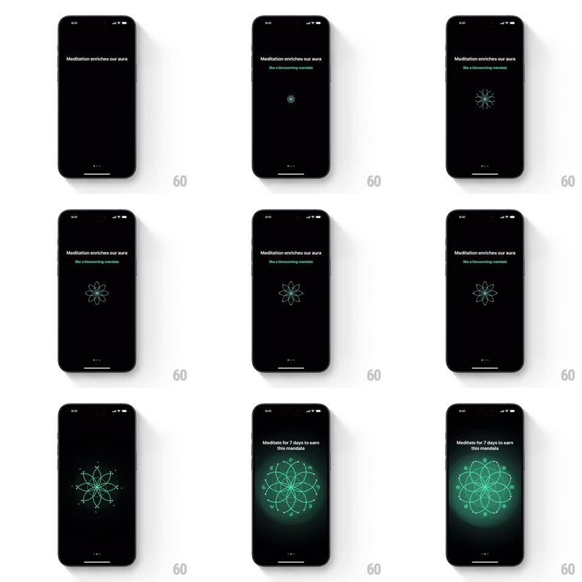

Media
Frame-by-frame

Rebuild this animation 1:1: a meditation onboarding beat - a tiny dot blossoms into an intricate line-art mandala that scales up and ignites into a glowing aura behind the "earn this mandala" message.

Rebuild this animation 1:1: a meditation onboarding beat - a tiny dot blossoms into an intricate line-art mandala that scales up and ignites into a glowing aura behind the "earn this mandala" message. ## Integration Integration: stack-agnostic spec - springs given as stiffness/damping, timed motions as duration + curve; map every value to your framework and animation library of choice. ## Scene Black screen. Top text: "Meditation enriches our aura" with a green italic sub-line "like a blossoming mandala". Center: a dot that grows into a white line-art mandala - first a simple 8-petal flower, then concentric rings of petals, dots, and ornaments. Final frame: the mandala glows green with a soft radial aura, ringed by small orbiting dots, under the line "Meditate for 7 days to earn this mandala". Page dots sit at the bottom. ## Motion spec Pattern: progressive mandala blossom. - The center dot appears (fade, 200ms), then the mandala draws outward ring by ring: each ring's strokes scale from the center point (400ms per ring, ease-out), ~120ms apart - petal ring, then dot ring, then ornament ring. - Stroke color shifts from white to green as the mandala completes (600ms crossfade through all rings, innermost first). - On completion the aura ignites: a soft radial glow blooms behind the mandala (scale 0.6 to 1.0 + opacity 0 to 0.7, 500ms) and the whole mandala scales up ~15% with a slow settle. - The headline swaps to the "earn" message with a 300ms fade as the glow lands. - Orbiting dots circle the mandala slowly (~20s per revolution) once ignited. ## Calibration - Ring-by-ring is the whole effect; fading the whole mandala in at once reads as a static icon. - The glow arrives after the line work, never with it. ## Reduced motion The completed glowing mandala fades in whole over 400ms. ## Don't miss - The mandala is thin line art - keep stroke weight ~1.5px; heavy strokes kill the delicacy. - Text stays pinned at the top while the mandala grows; nothing re-centers.